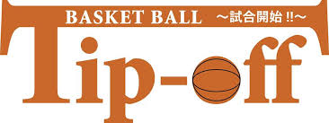
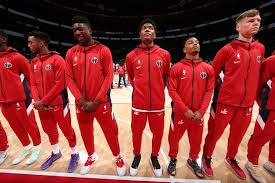
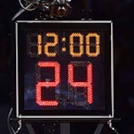
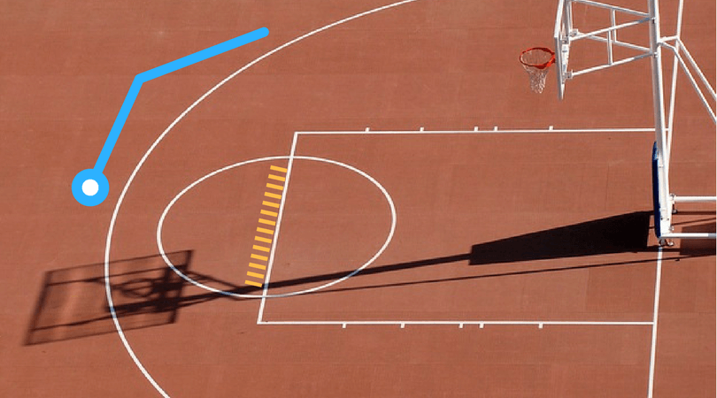
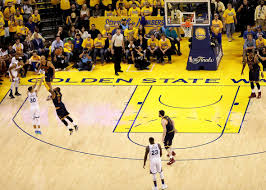
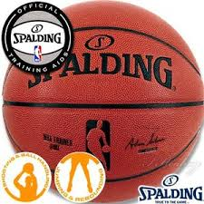
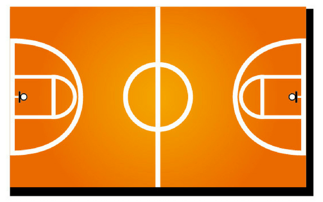
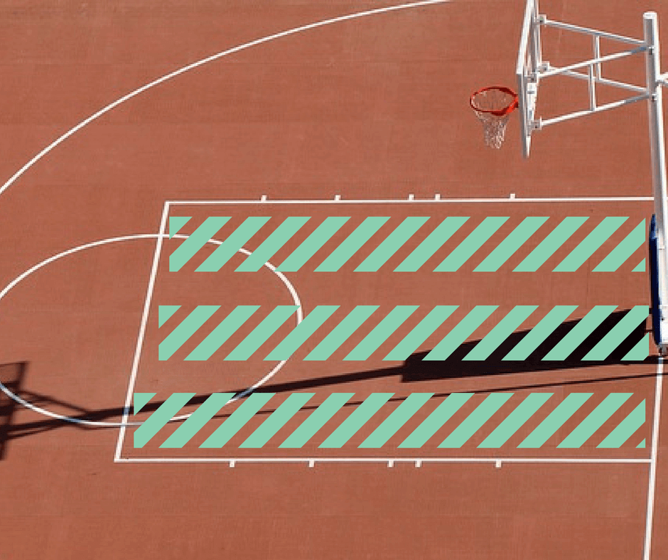

ここでは現在のバスケットボールのルール特にNBAのルールについて書いていきたいと思います。

バスケットボールのルールというものは数がとても多いので、今回は大まかなルールを紹介していきたいと思います。
バスケットボールは5対5で行うスポーツです。
ベンチには出場選手も含めて10～15人入ることが出来ます。
10～15人と幅があるのは、BリーグやNBA（アメリカのプロバスケットボールリーグ）などのプロリーグと中学校、高校などの大会により規定が違うからです。
因みに日本のバスケリーグであるBリーグでは10～12人の選手がベンチ入り可能です。
また、試合中にはベンチ入りしているメンバー内で何度でも選手の交代が可能です。
この点においてはサッカーや野球と大きく異なる点と言えます。

バスケットの試合は4クォーター制が採用されています。
以前は、サッカーのように前後半制でしたが、NBAで採用されていた4クォーター制が世界規模で2000年あたりに導入されました。
現在は、Bリーグを始め、小中高全ての大会で4クォーター制が採用されています。
ただ、試合時間は異なり、Bリーグを含めた成人リーグと高校生は10分/1Q、中学生は8分/1Q、小学生は6分/1Qが一般的です。
各クォーターの間には1～2分のインターバルがあり、第2・第3クォーターの間には5～10分のインターバルがあります。
ちなみにNBAでは12分/1Q制が採用されています。

バスケットは、得点を入れあうスポーツです。
NBAでは1試合で100点前後の点が毎試合入ります。
バスケットの得点には1点・2点・3点の3種類があります。

青色で記された半円の内側が全て2得点、外側が全て3得点となります。
ゲームの流れの中では2点と3点しかなく、相手の反則によって得るフリースローと呼ばれるプレイの時だけオレンジ色の線の位置からシュートをフリーで放つことが出来、その得点が1点となります。
※フリースローについては後述

バスケットの試合で使われるボールは、リーグや年齢、性別によって異なります。
サイズは号で記されるのが一般的です。同じ号であっても世界規格で周囲74.9～78cm（7号）など開きがあるためメーカーによっても若干サイズが異なります。
| 7号 | 中学生以上の男子 |
|---|---|
| 6号 | 中学生以上の女子 |
| 5号 | ミニバスケット |
以前は、高校生以上の女子も7号を使用し、中学生男子は6号を使用していましたが2010年あたりにそれぞれ変更になっています。
a
バスケット未経験の方には反則のルールが一番難しいかもしれません。
特有のものが多く、ファールの基準については経験者であっても見解が異なる部分もあります。
〇ファール
ファールと一言にいってもディフェンスファールやオフェンスファール、ベンチのファールなど様々です。
ただ、バスケットのファールのほとんどはディフェンスファールによるもので、オフェンスをルール違反で止めようとしたときにファールとなります。
バスケットが1試合にあれだけ点が入るのは、オフェンスが7：3で有利であるからと言え、基本的に体の接触はディフェンスのファールとなります。
しかし、この体の接触という点が非常に難しく、個人のみならずリーグや地方によっても細かい認識が異なっていると言えます。
ただ、基本的な部分は変わらないためバスケットのファールの種類を簡単に説明します。
プッシング
相手を押してはいけません。
ハッキング
相手の進攻を正対以外で妨げてはいけません。
トリッピング
相手の足を引っかけてはいけません。
フォールディング
相手を掴んではいけません。
オフェンスチャージング
オフェンスに課せられるファールで、正対しているディフェンスに対し無理やり進攻しようとしてはいけません。
スクリーン時のファール
スクリーンをかけるプレイヤーは動いてはいけません、また体の幅以上に腕や足を出してはいけません。
※スクリーンとはオフェンスプレイの1つで、ボールを持っていないオフェンスプレイヤーが他のオフェンスプレイヤーについているディフェンスを身体の幅を使って邪魔するプレイです。
スクリーンが何かわからない方のためにスクリーンを実際の試合でしている動画のリンクを貼っていますので良かったら見てみて下さい。
動画はこちら（Best Ball Screen Plays NBA and NCAA）テクニカルファウル
どのスポーツにおいてもそうなのですが審判や相手選手に暴言をはいてはいけません、またボールを叩きつけるなどスポーツマンシップのない行動をとってはいけません。
1試合で2度おこなうと退場となります。
ベンチメンバーやコーチ、監督であっても暴言やコート内に入るなど反則を犯した際はベンチテクニカルと呼ばれるテクニカルファールを受けます。
アンスポーツマンライクファール
スポーツマンらしくないファールという意味ですが、バスケットの試合では必要以上の激しいファールや、ボールを奪われた時の故意ととられるファールなどに課せられる時が多いです。
これもテクニカルファール同様、1試合で2度おこなうと退場となります。
ディスクオリファイングファール
バスケットにおいて最も悪質なファールで、1発で退場となります。
サッカーのレッドカードと同じと考えると分かりやすいでしょう。
フレグラントファール
NBAで採用されているファールで、ディスクオリファイングファールと似ていますが、タイプ1・2とさらに細かく設定されています。
タイプ2で一発退場となります。
ファールアウトとチームファール
1人のプレイヤーがファール出来る回数は5回までとなっていて、5回ファールした時点で退場となりコートに戻ることは出来ません。NBAでは6回でファールアウトとなります。
また、チーム全体で各クォーターごとに5回目のファールからはシュートモーションに関係なくファールをした時点で相手チームにフリースローが与えられます。
※フリースローについては後述
その他の反則
アウトオブバウンズ
バスケットボールのプレイは全てコート内でおこなわなくてはいけません。
ボールがコート外に出ることをアウトオブバウンズといい、最後に触れたチームと逆側のチームのボールでゲームが再開されます。
アウトオブバウンズという名の通りコート外であっても空中にボールがある時点では外に出たことにはなりません。
トラベリング
バスケット特有のルールで、ボールをもって3歩以上歩いてはいけません。
ボールをもってからというのが未経験の方には難しい部分ですが、ジャンプストップなど両足で着地し1歩とカウントされるテクニックなどもあります。
また、昨今ではキャッチと同時のステップは1歩とカウントされないゼロステップという技術も浸透しつつあります。
完璧に使いこなせる選手も少ないですが、それに対応してジャッジ出来る審判もおそらく少ないでしょう。
大会の大小などによりジャッジにバラツキが生まれる可能性もあります。
ダブルドリブル
ドリブルをした状態からボールを保持した場合、もう一度ドリブルをつくことは出来ません。
味方にパスを出してもう一度もらった場合は再度ドリブルをつくことが出来ます
3秒オーバータイム
オフェンスプレイヤーは斜線のエリアで3秒以上プレイすることは出来ません。
ボールを保持していてもいなくても同様です。
NBAではディフェンスの3秒ルールというものもありますが、世界規格ではなくNBA独自のルールとなります。
8秒オーバータイム
バックコート（攻める方と反対側の半分）からオフェンスが始まった場合、8秒以内にハーフラインを超えなくてはいけません。
24秒オーバータイム
オフェンスは、ボールを保持してから24秒以内にシュートを放たなくてはいけません。
24秒ルールは年々複雑になっていますが、基本的に攻守の切代わりと共にリセットされます。
リングにボールが当たった時点で24秒はリセットされるため、シュートを放ってもリングにあたらずにオフェンスリバウンドを取った時は24秒継続となります。
リングにあたりオフェンスリバウンドを取った際は残り14秒にリセットされます。
オフェンス中にファールを受けた際は残り14秒以前であれば継続となり、14秒以降であれば残り14秒までリセットされます。
相手に触れてボールがアウトし再度マイボールとなった場合は、残り秒数に関係なく継続となります。
バックコートヴァイオレーション
先ほど8秒以内にハーフラインを超えなくてはいけないルールを説明しましたが、一度ハーフラインを超えると今度はバックコートにボールを戻すことは出来ません。
以前はバックパスと呼ばれていたため、現在でもその名残がありバックパスと呼ぶプレイヤーもいます。
キックボール
バスケットでは足でボールを扱うことは禁止されています。
故意でなく足（シューズ）にボールがあたった場合でもキックボールとなることがあります。
ゴールテンディング、インターフェア
オフェンスがシュートを放った際に、ディフェンスがそれを阻止しようとブロックショットに飛ぶシーンでおこる反則です。
シュートが頂点から降りかかってからはボールに触れることは出来ません。ボードに当たってからも同様です。
また、シュートを阻止するためにリングやネット、ボードに触れる行為はインターフェアという反則になります。
フリースロー
オフェンス時にシュートモーションでファールを受けた際やテクニカルファール以上の悪質なファール、チームファールによりフリースローを得ることが出来ます。
バスケットの得点の種類で説明されているフリースローラインからディフェンスの邪魔なくシュートを放つことが出来、得点は全て1本1点です。
数あるスポーツの中でもバスケットのフリースローは最も簡単に点を取る方法と言われています。
その分奥が深く、数点差で勝負が決まる試合ではこのフリースローも勝負の大きなカギとなります。
全ての反則が完璧に吹かれることは不可能？！
どんなスポーツもそうですが、全ての反則が完璧に吹かれることはバスケットでも難しいと言えるでしょう。
NBAやBリーグではビデオ判定も導入されていますが、請求できるのは選手やコーチではなく審判員のみです。
また、ビデオ判定を要求できるシーンも終了間際のシュートと時間の兼ね合いや、アウトオブバウンズ時のどちらのボールかなどシチュエーションは決められています。
最後に
上記に挙げたバスケットのルールは基本ではありますが、観戦する際やこれからバスケットを始めるという方はこれだけ理解しておけば問題なく楽しむことが出来ます。
さらに細かい部分については、観戦やプレイを重ねるにつれてケースバイケースで覚えていくことでしょう。
逆に言うと未経験の方が最初から全てのルールを状況に合わせて覚えるのはさすがに難しいです。
これはどのスポーツでも共通していえることだと思います。
Bリーグも始まりさらに国内でバスケットの人気が過熱し、メディアへの露出も増えることが予想されるので、より楽しむために基本のルールは是非覚えておきましょう。